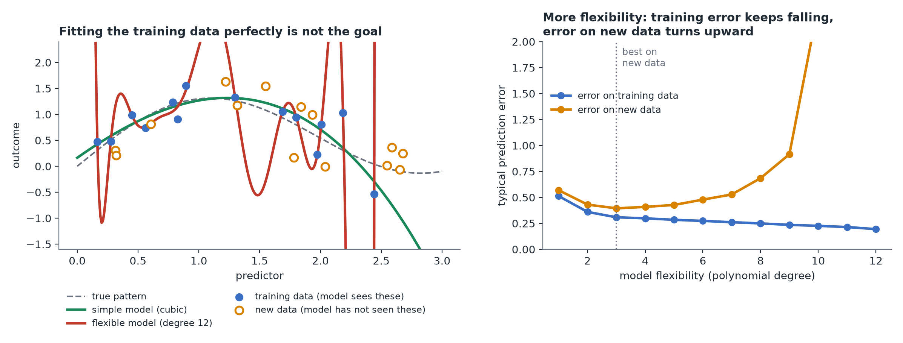

Overfitting and Regularization
In plain terms: a model that fits your exact data perfectly is often worse at its actual job than one that fits slightly more loosely — because it's memorized the noise, not just the pattern.
A simple picture
Imagine Mia fitting a model with hundreds of genetic variants as predictors to her 300 patients, flexible enough to reproduce every patient's LDL cholesterol exactly, versus a simple model with a handful of predictors that gets close for most of them. The flexible model has zero error on this data — but ask it to predict LDL for a new, unseen patient, and it will likely do far worse than the simple one. It learned the specific quirks (including measurement noise) of these 300 patients, not the general relationship between genotype, age, and LDL. That's overfitting. (This is the real-world setting of polygenic scores: a single risk number built by adding up the small effects of many variants, which only predicts well in new patients if the model was kept from overfitting.)

Why more predictors makes this worse
The more predictors you throw into a model — especially relative to how much data you have — the easier it becomes to fit the training data almost perfectly by exploiting coincidental patterns that won't repeat in new data. This is a particular risk in life-science datasets with many candidate predictors (genes, biomarkers, environmental variables) and comparatively few samples.
Regularization: the standard fix
Regularization deliberately shrinks a model's coefficients toward zero (or exactly to zero, for the least important ones), trading a small amount of fit on the current data for a model that generalizes better to new data. Two common flavors:
- Ridge: shrinks all coefficients somewhat, good when many predictors each contribute a little.
- Lasso: can shrink some coefficients all the way to zero, effectively selecting a smaller set of "important" predictors.
- Elastic Net: a blend of both.
How much to shrink is itself chosen by checking performance on held-out data (see Cross-validation) — not guessed.
One practical note
Regularization works on the size of coefficients, so it only makes sense when predictors are on comparable scales first (e.g. standardized to have the same spread) — otherwise a predictor measured in large numbers (like "triglycerides in mg/dL") gets penalized differently than one measured in small numbers (like "number of variant copies, 0 to 2") for reasons that have nothing to do with their actual importance.